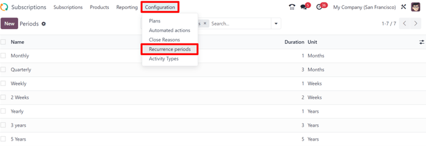
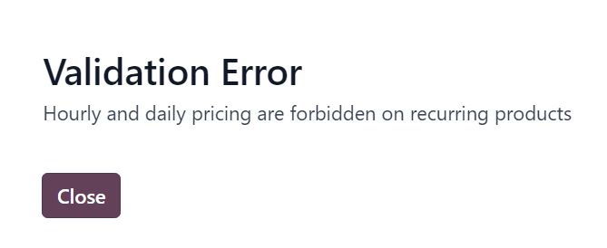
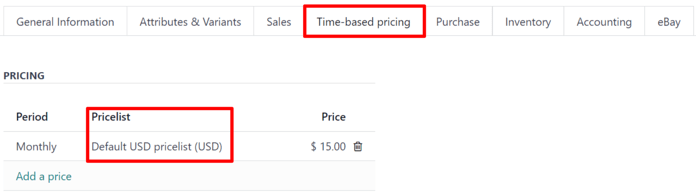
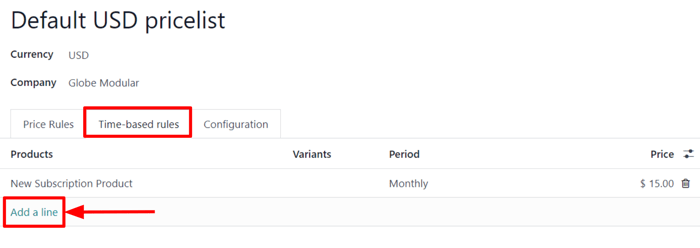

Productos de suscripción¶
Al integrar las aplicaciones Ventas y Suscricpiones de Odoo, los usuarios pueden vender productos de suscripción junto con productos normales. Mientras que los productos normales se venden una vez, los productos de suscripción se venden por renovación, y así se genera un ingreso recurrente.
En Odoo, a los productos de suscripción también se les llama productos recurrentes.
Configurar periodos recurrentes¶
Para iniciar con las suscripciones, primero asegúrese de que los periodos recurrentes estén configurados como lo necesite.
Los periodos recurrentes son los periodos de tiempo en los que las suscripciones se renuevan. Designan cada cuánto el cliente debe pagar por (y recibir) los productos de suscripción.
Para configurar los periodos recurrentes, vaya a .
La aplicación Suscripciones ya tiene configurados algunos periodos de recurrencia básicos.
Mensual
Trimestral
Semanal
Cada 2 semanas
Anual
Cada 3 años
Cada 5 años
Puede agregar nuevos periodos de recurrencia o editarlo en cualquier momento.
Para crear un nuevo periodo de recurrencia, haga clic en Nuevo en la página de Periodos de recurrencia, y de esta forma, se abrirá un formulario en blanco para un periodo de recurrencia.

Luego, escriba el Nombre y la Duración del periodo de recurrencia y seleccione la Unidad que definirá la duración.
Importante
No podrá usar la unidad de Días como un periodo de recurrencia en las suscripciones, pues este tipo de recurrencia está hecha para los alquileres y no se puede agregar a las órdenes de ventas de suscripciones recurrentes.
Esta limitación existe para evitar que las órdenes de ventar generen facturas diarias.
Configuración del formulario del producto¶
Para crear un nuevo producto de suscripción vaya a y haga clic en Nuevo.
Aparecerá un formulario de producto en blanco que podrá configurar y personalizar de varias formas.
Nota
El nuevo producto tendra automáticamente seleccionada la casilla de Recurrente,. esto le permite a Odoo reconocerlo como un producto de suscripción. Asegúrese de dejar activadas las opciones Recurrente y Se puede vender.
El campo Tipo de producto está configurado como Servicio de forma predeterminada, pero puede configurar los productos de suscripción con otros tipos en caso de que sea necesario.
Precio basado en tiempo¶
Una vez que haya completado los campos que desee en la pestaña Información general, haga clic en la pestaña Precio según el tiempo.

Desde aquí, haga clic en Agregar un precio para empezar a definir los precios recurrentes.
En la columna Periodo, seleccione el periodo de recurrencia que desee. Si lo requiere, puede seleccionar una lista de precios en la columna Lista de precios. Luego, en la columna Precio, escriba el precio para ese periodo recurrente.
Nota
Los periodos Diario y Por hora no se pueden usar en los productos recurrentes.
Nota
No hay límite para las líneas que puede agregar a la tabla de Precio según el tiempo.
Truco
Un producto existente se puede convertir a producto de suscripción si lo marca como Recurrente y lo configura con Precio basado en tiempo en el formulario del producto.
Listas de precios¶
Listas de precio can be used with subscription products to give special pricing to customers included in pricelists.
Esto se puede configurar en la pestaña Precio según el tiempo en el formulario del producto, o en el formulario de la lista de precios en la aplicación Ventas.
Para crear reglas de precio recurrentes para listas de precios específicas en la pestaña Precio basado en tiempo del formulario de producto, seleccione una lista de precios en la columna Listas de precios.
Cuando las lista de precios se agregan a la pestaña Precios basados en tiempo, el formulario de la lista de precios en la aplicación Ventas se actualiza automáticamente.
Las reglas de los precios según el tiempo también se pueden configurar directamente en el formulario de la lista de precios.
Para hacerlo, vaya a y seleccione una lista de precios (o haga clic en Nuevo para crear una nueva lista).
Nota
También puede acceder a las listas de precios mediante la aplicación Suscripciones con los mismos del menú.
Luego, en el formulario de la lista de precios, en la pestaña Reglas según el tiempo, haga clic en Agregar una línea.
Luego, seleccione un producto de suscripción en la columna Productos y seleccione un periodo recurrente en la columna Periodo. Introduzca un Precio para ese producto y periodo particulares. Agregue tantas líneas como lo necesite.
La pestaña Precios por tiempo del formulario del producto se actualiza en automático cuando agrega reglas por tiempo al formulario de la lista de precios.